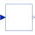
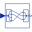
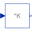

MIMOMultiple Input Multiple Output continuous control block |

|
Information
This information is part of the Modelica Standard Library maintained by the Modelica Association.
Block has a continuous Real input and a continuous Real output signal vector. The signal sizes of the input and output vector may be different.
Parameters (2)
| nin |
Value: 1 Type: Integer Description: Number of inputs |
|---|---|
| nout |
Value: 1 Type: Integer Description: Number of outputs |
Connectors (2)
| u |
Type: RealInput[nin] Description: Connector of Real input signals |
|
|---|---|---|
| y |
Type: RealOutput[nout] Description: Connector of Real output signals |
Extended by (7)
|
Modelica.Electrical.Machines.Utilities
Transform rotor fixed space phasor to instantaneous stator quantities |
|
|
Modelica.Electrical.Machines.Utilities
Transform instantaneous stator inputs to rotor fixed space phasor |
|
|
Modelica.Electrical.Machines.SpacePhasors.Blocks
Conversion of space phasors to multi phase instantaneous values |
|
|
Modelica.Electrical.Machines.SpacePhasors.Blocks
Conversion of multi phase instantaneous values to space phasors |
|
|  |
Modelica.Blocks.Routing
Extract signals from an input signal vector |
|  |
Modelica.Blocks.Math
Output the product of a gain matrix with the input signal vector |
|
Modelica.Blocks.Continuous
Linear state space system |